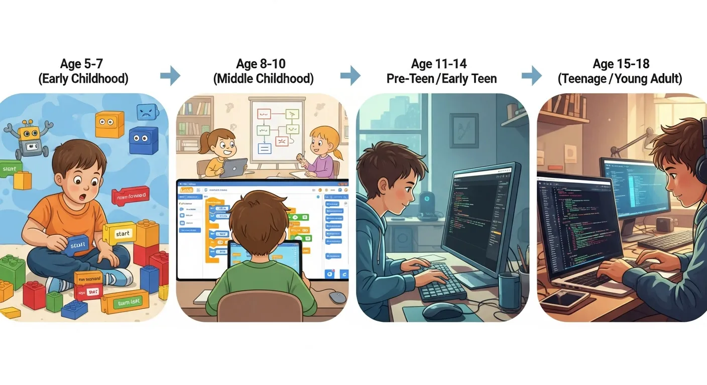

באיזה גיל להתחיל ללמוד תכנות? 🎯
מדריך גילאים מלא להורים

"הילד שלי בן 8, זה מתאים לתכנות?" — שאלה שאנחנו שומעים כל יום בדרך ההייטק. אחרי שש שנים ומעל 5,000 תלמידים, אנחנו יודעים בדיוק מה עובד בכל גיל — ומה לא.
התשובה היא כן, אבל סוג התכנות משתנה לפי הגיל. ילד בן 7 לא ישב לכתוב Python, אבל הוא יכול ליצור משחק שלם בסקראץ'. ילד בן 12 כבר יכול לבנות אתר אינטרנט או משחק רובלוקס. בואו נפרק את זה.
התשובה הקצרה
אין גיל "נכון" אחד. יש גיל מתאים לכל סוג של תכנות. הסוד הוא להתאים את הכלי לגיל ולעניין של הילד. ילד שאוהב מיינקראפט? נתחיל שם. אוהבת רובלוקס? מושלם. אוהב לבנות אתרים? גם לזה יש פתרון.
מחקרים מראים שהגיל האידיאלי להתחיל הוא בין 7 ל-12 — התקופה שבה המוח הכי פתוח ללמידת חשיבה לוגית חדשה. אבל גם מי שמתחיל מאוחר יותר יכול להגיע רחוק.
🧸 גיל 7-9 — השלב הראשון
🧸 גיל 7-9 שלב ראשון
מה מתאים: סקראץ', מיינקראפט בסיסי, כלים ויזואליים
- למידה דרך בלוקים צבעוניים (לא צריך להקליד קוד)
- יצירת אנימציות ומשחקים פשוטים
- בניית עולמות במיינקראפט
- פיתוח חשיבה לוגית בלי לחץ
מה הילד ישיג: הבנה של לולאות, תנאים, ומשתנים — בלי לדעת שזה מה שהוא לומד!
בגיל הזה, ילדים לומדים הכי טוב דרך משחק ויצירה. סקראץ', שפותחה ב-MIT, מאפשרת ליצור משחקים ואנימציות על ידי גרירת בלוקים צבעוניים — בדיוק כמו לגו דיגיטלי. הילד לא צריך לדעת לקרוא באנגלית או להקליד מהר.
במיינקראפט, ילדים לומדים חשיבה מרחבית, תכנון, וביצוע — מיומנויות שהן הבסיס לתכנות. הקורס שלנו "מיינקראפט: בניית עולמות" מתאים בדיוק לגיל הזה.
🎮 גיל 10-11 — שלב הביניים
🎮 גיל 10-11 שלב ביניים
מה מתאים: JavaScript במיינקראפט, Lua ברובלוקס, Python בסיסי
- מעבר מבלוקים לקוד כתוב אמיתי
- יצירת מודים ופלאגינים למשחקים
- תכנות בתוך סביבה מוכרת (משחק שהם אוהבים)
- פרויקטים אישיים ראשונים
מה הילד ישיג: כתיבת קוד אמיתי, הבנת syntax, ותיק עבודות ראשוני.
גיל 10 הוא "גיל הזהב" ללימוד תכנות. הילד כבר יודע לקרוא באנגלית (לפחות בסיסי), יש לו סבלנות ליותר מ-5 דקות, והוא מסוגל להבין מושגים מופשטים כמו משתנים ופונקציות.
הטריק: ללמד דרך מה שהילד כבר אוהב. אם הוא משחק רובלוקס כל יום — קורס רובלוקס עם Lua יהפוך אותו מ"שחקן" ל"יוצר". אם הוא מכור למיינקראפט — JavaScript דרך מיינקראפט זה קסם.
אחד התלמידים שלנו, איתן בן 12 מחולון, התחיל עם קורס רובלוקס בגיל 10. תוך חודשיים הוא בנה משחק שהגיע ל-500 שחקנים פעילים. היום הוא מלמד חברים שלו לתכנת.
💻 גיל 12-14 — השלב המתקדם
💻 גיל 12-14 שלב מתקדם
מה מתאים: פיתוח אתרים, Python, Java, פיתוח אפליקציות
- שליטה בשפות תכנות מקצועיות
- בניית אתרים ואפליקציות
- הבנה של מושגים מתקדמים (אובייקטים, מחלקות)
- עבודה עם כלים מקצועיים (VS Code, GitHub)
מה הילד ישיג: יכולת ליצור פרויקטים עצמאיים, בסיס לקריירה בהייטק.
בגיל הזה, ילדים יכולים כבר לעבוד עם שפות תכנות "אמיתיות" — אותן שפות שמשתמשים בהן בחברות הייטק. Python היא הבחירה הפופולרית ביותר כי היא קלה לקריאה אבל חזקה מאוד — משמשת ב-Google, Netflix, ו-Instagram.
נוער בגיל 12-14 יכול גם לבנות אתרי אינטרנט (HTML, CSS, JavaScript), ליצור בוטים לדיסקורד, או אפילו להתחיל לעבוד עם בינה מלאכותית. הפרויקטים בגיל הזה כבר יכולים להיכנס לתיק עבודות אמיתי.
🚀 גיל 14+ — השלב המקצועי
🚀 גיל 14+ שלב מקצועי
מה מתאים: פיתוח Full Stack, בינה מלאכותית, אלגוריתמים
- פרויקטים ברמה מקצועית
- השתתפות בתחרויות תכנות (האקתונים)
- תרומה לפרויקטי קוד פתוח
- הכנה ליחידות טכנולוגיות בצבא / לימודים אקדמיים
נער שמגיע לגיל 14 עם ניסיון בתכנות הוא כבר "מתכנת צעיר" לכל דבר. הוא יכול לבנות אפליקציות מלאות, להשתתף בהאקתונים, ולהתחיל לבנות תיק עבודות שיפתח לו דלתות — ליחידות מובחרות בצה"ל (8200, מצ"ח), ללימודי מדעי המחשב, ואפילו לעבודות סטודנט בהייטק.
בדרך ההייטק אנחנו מציעים גם קורסי פיתוח עם AI שמלמדים את הנוער להשתמש בכלי בינה מלאכותית כמו ChatGPT ו-GitHub Copilot — המיומנות הכי מבוקשת בשוק העבודה היום.
טבלת השוואה מהירה
| גיל | שפה/כלי מומלץ | סוג למידה | קורס מתאים |
|---|---|---|---|
| 7-9 | סקראץ', מיינקראפט בסיסי | ויזואלי, משחקי | מיינקראפט: בניית עולמות |
| 10-11 | JavaScript, Lua, Python בסיסי | קוד דרך משחקים | רובלוקס + Lua |
| 12-14 | Python, Java, HTML/CSS/JS | פרויקטים אמיתיים | Python: פיתוח משחקים |
| 14+ | כל שפה, AI, Full Stack | מקצועי | פיתוח אתרים + AI |
סימנים שהילד מוכן לתכנות
לא בטוחים אם הילד שלכם מוכן? הנה כמה סימנים חיוביים:
- ✅ שואל "איך זה עובד?" — סקרנות טכנולוגית היא סימן מצוין
- ✅ אוהב לבנות דברים — לגו, מיינקראפט, יצירה — מבנה יוצר
- ✅ משחק הרבה במחשב/טאבלט — אפשר להפוך את זמן המסך מפסיבי לאקטיבי
- ✅ לא מוותר מהר — סבלנות בסיסית חשובה (אבל גם מתפתחת עם הזמן)
- ✅ אוהב משחקי חשיבה — פאזלים, חידות, סודוקו
חשוב: גם ילד שלא מראה את כל הסימנים יכול להצליח מאוד! הרבה ילדים מגלים את האהבה לתכנות רק אחרי שמתנסים.
💡 הטיפ הכי חשוב
יותר מהגיל, מה שחשוב הוא העניין של הילד. ילד שמשחק מיינקראפט כל היום? תתחילו עם תכנות במיינקראפט. אוהב רובלוקס? יש קורסים לזה. הלמידה הכי טובה היא דרך מה שהילד כבר אוהב.
מתי זה מאוחר מדי?
אף פעם. יש מתכנתים מצליחים שהתחילו בגיל 20, 30, ואפילו 40. אבל ככל שמתחילים מוקדם יותר, כך יש יותר זמן לצבור ניסיון ולפתח את הכישורים.
מחקרים מראים שילדים שמתחילים ללמוד תכנות לפני גיל 12 מפתחים "חשיבה חישובית" טובה יותר לאורך החיים — בדומה למי שלומד שפה שנייה בגיל צעיר. המוח פשוט יותר גמיש.
אבל אם הילד שלכם בן 14 ועוד לא התחיל — אל תדאגו! בגיל הזה הלמידה מהירה יותר כי היכולת הקוגניטיבית מפותחת. ילד בן 14 יכול להתחיל ישר עם Python ולהתקדם מהר.
כמה זמן לוקח ללמוד תכנות?
שאלה שכל הורה שואל. הנה המציאות:
- שיעור ראשון: הילד ייצור משהו — משחק קטן, אנימציה, עולם במיינקראפט
- חודש: הבנה בסיסית של תכנות, יכולת ליצור פרויקטים פשוטים
- 3 חודשים: שליטה בשפה אחת, תיק עבודות ראשוני
- שנה: יכולת ליצור פרויקטים מורכבים, התחלת מעבר לשפות מתקדמות
- 2-3 שנים: רמה שמאפשרת להשתתף בהאקתונים ותחרויות
כמה זמן בשבוע? 2-3 שעות מספיקות. שיעור אחד של 45-60 דקות בשבוע + תרגול עצמאי. הדבר החשוב הוא עקביות — עדיף שעה בשבוע כל שבוע מ-5 שעות פעם בחודש.
השלב הבא
עכשיו כשאתם יודעים מה מתאים לגיל של הילד שלכם, הגיע הזמן לבחור קורס. חשוב לוודא שהקורס:
- ✅ מותאם לגיל ולרמה
- ✅ כולל פרויקטים מעשיים (לא רק תיאוריה)
- ✅ מלמד דרך נושאים שהילד אוהב
- ✅ יש בו תמיכה ומענה לשאלות
- ✅ המדריכים הם אנשי מקצוע אמיתיים
בדרך ההייטק כל המדריכים שלנו הם מהנדסי תוכנה פעילים — לא סטודנטים. הם מביאים ניסיון אמיתי מהתעשייה לתוך השיעור. ראו חבילות ומחירים →
📅 קורס תכנות לילדים
מגיל 7 • ללא ניסיון קודם • גישה לנצח
שאלות נפוצות
האם 7 זה לא מוקדם מדי לתכנות?
לא! בגיל 7-9 ילדים לומדים תכנות דרך כלים ויזואליים כמו סקראץ' ומיינקראפט. הם לא כותבים קוד טקסטואלי אלא גוררים בלוקים צבעוניים — מה שמפתח חשיבה לוגית בלי לחץ.
איזו שפת תכנות הכי מתאימה לילדים?
תלוי בגיל ובתחום העניין. לגיל 7-9: סקראץ'. לגיל 10+: Lua (אם אוהב רובלוקס), JavaScript (אם אוהב מיינקראפט), Python (לכל דבר). לגיל 12+: Python, Java, או פיתוח אתרים. קראו עוד על למה ללמד ילדים תכנות →
כמה שעות בשבוע צריך ללמוד תכנות?
2-3 שעות בשבוע מספיקות לרוב הילדים. שיעור אחד של 45-60 דקות בשבוע + תרגול עצמאי. הדבר החשוב הוא עקביות — עדיף שעה בשבוע כל שבוע מ-5 שעות פעם בחודש.
הילד שלי בן 14 ועוד לא למד תכנות — מאוחר מדי?
בכלל לא! בגיל 14 הלמידה דווקא מהירה יותר. הילד יכול להתחיל ישר עם Python או פיתוח אתרים ולהתקדם מהר. הרבה מתכנתים מצליחים התחילו אחרי גיל 14.
מה ההבדל בין קורס דיגיטלי לשיעורים פרטיים?
קורס דיגיטלי (מ-497₪) מתאים ללומדים עצמאיים — שיעורים מוקלטים, לומדים בקצב עצמי. שיעורים פרטיים (מ-156₪ לשיעור) כוללים מדריך אישי 1:1 שמתאים את הלמידה לילד. השוואת חבילות מלאה →
📚 קריאה נוספת:
למה ללמד ילדים תכנות? 7 סיבות ·
סקראץ' לילדים ·
מיינקראפט ותכנות ·
רובלוקס לילדים ·
איך ללמד ילד תכנות?